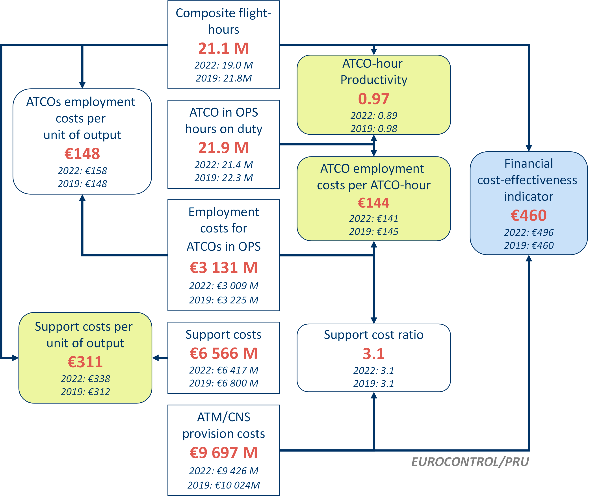

2 High-level revenues, costs and staff data
This section provides a preliminary presentation of high-level revenues, costs and staff data provided in ANSPs ACE 2020 data submissions. Total ANS revenues in 2020 amounted to €4 502M. Most en-route revenues come from the collection of en-route charges (91.4%, see left pie chart). The proportion of terminal revenues from charges is lower (50.9%, see right pie chart), as additional income may directly come from airport operators (31.2% e.g. through a contractual arrangement between the ANSP and the airport operator).

Across the Pan-European system, traffic in 2020 (measured in composite flight-hours) was -56.8% lower than in 2019 and total gate-to-gate revenues fell by -53.1%. In this context there were also some changes in the composition of ANSPs revenues, since the outbreak of COVID-19 did not affect all sources of revenues in the same proportion.
Some revenue items increased in 2020, such as income from exempted flights (+11.3%), income from domestic governments (+11.3%) and other revenues (+21.6%). However, these increases (+€46M) remain marginal compared to the drop in en-route and terminal charges revenues (-€4 982 M) at Pan-European level. Detailed analysis shows that most ANSPs did not record any State aid as part of their 2020 revenues.
At terminal level, the share of income from airport operator rose from 21.1% in 2019 to 31.2% in 2020 as this revenue stream reduced much less than the income from terminal charges.
The ACE benchmarking analysis focuses on the specific costs of providing gate-to-gate ATM/CNS services which amounted to €8 228M in 2020. Operating costs (including staff costs, non-staff operating costs and exceptional cost items) accounted for some 84% of total ATM/CNS provision costs, while depreciation costs and the cost of capital represented some 16%.

In 2020, the five largest ANSPs (ENAIRE, ENAV, DFS, DSNA and NATS) bore some 56% of total Pan-European gate-to-gate ATM/CNS provision costs, while the five smallest ANSPs accounted for some 1% (see bottom left part of Figure 4.3).
ATM/CNS provision costs increased by +1.3% p.a. between 2015 and 2019, and then fell by -5.0% in 2020 as ANSPs implemented a range of measures to reduce costs and preserve liquidities. As shown in the bottom right part of Figure 4.3, the -5.0% decrease in ATM/CNS costs in 2020 reflects reductions for 31 out of 38 ANSPs. More details on the changes in ANSPs ATM/CNS provision costs in 2020 will be available in the final ACE 2020 benchmarking report.
In response to the challenges presented by the extraordinary drop in traffic, ANSPs implemented a range of cost-containment measures in 2020, leading to an overall reduction in ATM/CNS costs of -€433.4M.
The full effect of these measures is however not yet visible in the 2020 data since, for instance, some redundancy plans were negotiated during the year but the actual impact on the number of staff, and on the staff costs, will become visible only in the 2021 data. Some ANSPs implementing redundancy plans in 2020 even recorded cost increases in the year, reflecting provisions or payments to the staff made redundant. This was the main driver for an increase in exceptional costs of some +€55.6M.
Staff costs were by far the main source of savings in 2020 (-€315.6M), due to the implementation of the following measures:
- Short-time work / furlough schemes, where applicable, with part of employees’ salaries paid by the State either directly to the employees or reducing ANSPs wage bill.
- Reduced staff numbers (discussed further below).
- Reduced level of remuneration through reduction or freeze of base salaries, reduction or suspension of variable part of salaries such as overtime payments and performance bonuses.
A majority of ANSPs also reduced non-staff operating costs by carrying out only essential maintenance, reducing utilities costs and non-essential training activities. This resulted in a decrease of some -€39.2M.
Finally, the cancellation or deferral of non-essential investments resulted in lower depreciation costs (-€51.0M) and lower cost of capital (-€83.2M). The latter is also impacted, in many cases, by the use of a lower weighted average cost of capital in 2020.


The Pan-European employed a total of 55 712 staff in 2020 (comprising 54 871 staff providing ATM/CNS services and 845 internal MET staff). Some 17 400 staff (32%) were ATCOs working on operational duty, split between ACCs (56%) and APP/TWR facilities (44%). On average, 2.2 additional staff are required for every ATCO in OPS in Europe.


After four years of continuous increase in the number of ATM/CNS staff (+0.6% p.a. between 2015 and 2019, or +1 384 FTEs), 2020 showed a -3.4% reduction (-1 936 FTEs).
The lower staff number observed for 2020 mainly reflects decreases in the following staff categories:
- Other staff (-779 FTEs or -20.1%);
- ATCOs in OPS (-485 FTEs, or -2.7%);
- Technical support for operational maintenance (-340 FTEs, or -3.5%);
- Administrative staff (-323 FTEs, or -3.3%); and,
- Staff for ancillary services (-112 FTEs or -5.8%).
On the other hand, increases are observed for ATCOs on other duties (+121 FTEs) and on-the-job trainees (+141 FTEs), reflecting a reallocation of some ATCOs from operational to non-operational duties due to the traffic reduction in 2020, and the fact that newly recruited ATCOs had to complete their on-the-job training.
In addition to the measures on staff costs already mentioned above (redundancies, short-time work / furlough schemes), it is important to note that during the lockdown periods, some ANSPs staff had to consume accumulated holidays not used in previous years and/or made use of pre-retirement schemes. Furthermore, depending on the nature of their work, some staff were inevitably left without specific tasks, however, in most cases, they continued to be counted as full time equivalents in 2020.
It is also important to note that the trend observed at Pan-European system level is heavily affected by the reporting of very large reductions by UkSATSE. Excluding UkSATSE, the total number of ATM/CNS staff in 2020 would be close to its 2019 level (-0.1%).
The trends shown in the Figure 4.5 above should therefore be interpreted with caution.
Although some ANSPs might have discontinued the ATCO recruitment process during the pandemic, the number of ab-initio trainees increased by +1.2% in 2020. It will be interesting to monitor this trend in future years as the long time period required to train a fully qualified ATCO might have an impact on the level the capacity offered by ANSPs when traffic returns to pre-crisis levels.
3 ANSPs Cash and Liquidity Issues as a Result of the Covid-19 Pandemic
This section provides a preliminary analysis of specific financial indicators that can be used to monitor potential cash and liquidity issues experienced by ANSPs as a result of the COVID-19 pandemic. It is structured into three parts:
- changes in ANSPs balance sheet structure at Pan-European system level between 2019 and 2020;
- presentation of three financial indicators that can be calculated from ACE data submissions (current ratio, cash-on-hand days and equity ratio); and,
- presentation of the free cash flow indicator, which is calculated from ANSPs financial statements.
Due to specific organisational and financial set up in HCAA, LVNL and MUAC, these three ANSPs are excluded from the analysis presented in this section.
3.1 Changes in the balance sheet structure
Figure 1.1 presents the changes in ANSPs balance sheet structure as reported in their ACE data submissions at “Total ANS” level (i.e. en-route, terminal and other ANS). The scope is therefore wider than gate-to-gate ATM/CNS which is used to calculate the other ACE key performance indicators, but depending on what ANSPs include under “Other ANS”, it might not necessarily match with the whole activities of the ANSP.

On the assets side, the shares of NBV of fixed assets in operations and of current assets fell by -5 and -6 percent points, respectively. In the meantime the share of long-term financial assets and receivables rose by +12 percentage points, mainly due to large under-recoveries from 2020 to be charged in future years.
On the liabilities side, the share of capital and reserves fell by -11 percentage points (-€1.1 billion) mainly due to the recording of losses in 2020. In the meantime, the share of long-term liabilities rose by a +11 percentage points as several ANSPs contracted new loans or drew down from existing loan facilities in order to respond to liquidity issues and continue invest in priority projects. Short and long-term borrowings rose by +€2.5 billion in 2020 (+134%).
Although the level of capex was reduced by -26% (-€0.4 billion), it still represents €1 billion of expenditures.
{r Figure-5-2, out.width='90%',echo=FALSE} knitr::include_graphics('figures/Figure-5-2.png')
3.2 Financial indicators calculated from ANSPs ACE data submissions
The current ratio, cash-on-hand days, and equity ratio can be calculated using balance sheet information submitted for ACE at the total ANS level. For more details on how these ratios have been defined for the purposes of this analysis, along with their limitations, please refer to Section 3.4 of the ACE 2019 report. More detailed analysis of changes in these indicators will be provided in the ACE 2020 benchmarking report.
Figures below show the 1st quartile1, the Pan-European system average2 and the 3rd quartile of these three indicators and the changes between the average for the 2015-2019 period and the year 20203.
{r figure19-bis, out.width='100%',echo=FALSE} knitr::include_graphics('figures/Figure-5-3.png')
{r figure20-bis, out.width='100%',echo=FALSE} knitr::include_graphics('figures/Figure-5-4.png')
{r fig-figure21-bis, fig.cap = 'Changes in ANSPs balance sheet structure (2019-2020)', out.width='100%',echo=FALSE} knitr::include_graphics('figures/Figure-5-5.png')
The current ratio measures the ability of a company to pay its short-term debt obligations with its current assets. A value of more than 1 suggests financial well-being for the organisation, as it can settle its short-term debt obligations with its current assets.
In 2020, the average current ratio at Pan-European level amounted to 2.6, which is down by about -28% compared to the 2015-2019 period.
Cash-on-hand days measures the length of time a company can pay its operating costs from its cash reserves.
In 2020, the average cash-on-hand days at Pan-European level amounted to 136 days, which is 34 days (or -20%) lower than over the 2015-2019 period.
The equity ratio measures the share of a company’s balance sheet (total assets or total liabilities) which is financed by equity. A high ratio can indicate a relatively strong position in case of economic downturn since the company will have less debt to reimburse and might also be able to obtain loans more easily.
In 2020, the average equity ratio at Pan-European level amounted to 0.4, down by -19% compared to the 2015-2019 period.
3.3 Cash flow indicators calculated from ANSPs financial statements
Free cash flow is an indicator widely used by other aviation industry stakeholders. Here it is presented at an organisational level, based on the information reported in ANSPs’ financial statements. Depending on the organisational set up of ANSPs, this information may cover a wider scope of activities than the scope reported in the ACE submissions for “Total ANS”. In the case of DFS, the financial reporting standards used to establish route charges and for ACE reporting (regulatory accounting) are also different from the reporting standards used in DFS financial statements (IFRS).
The free cash flow to revenues ratio provides a representation of the cash generated by operations (after accounting for capital investments) which is available to repay creditors or pay dividends and interests to investors. It can therefore be broken down in two elements: a) the net cash from operating activities and b) the capital expenditures (CAPEX). Dividing these ratios by revenues allows an easier interpretation of the indicators when looking at organisations of different size.

Figure 1.2 shows the 2019-2020 changes in free cash flow to revenues ratio (and its components) at ANSP level for 24 ANSPs for which data is publically available at the time of writing this report4.
Whereas 15 of these ANSPs had a positive ratio in 2019, all ANSPs analysed (with the exception of Albcontrol) have a negative ratio in 2020. Although changes in the free cash flow are mainly driven by changes in the net cash flow from operating activities (see middle chart in Figure 1.2), it is interesting to note that when the free cash flow was negative in 2019, it was in several cases due to relatively large capital expenditures during the year (e.g. in 2019, Sakaeronavigatsia and LGS respectively invested 37% and 29% of their revenues).
More detailed analysis of changes in the free cash flow to revenues ratio will be provided in the ACE 2020 benchmarking report.
The analysis of ANSPs indicators shows that the situation deteriorated on several criteria:
- The ability to cover short-term debt by using current assets was reduced by almost one third compared to the 2015-2019 period (current ratio falling from 3.6 to 2.6).
- Cash reserves at the end of 2020 were sufficient to cover 136 days of operating expenses (34 days less than over the 2015-2019 period). When interpreting this indicator, it is important to consider the fact that loans contracted but not fully used in 2020 appear as cash in the balance sheet.
- The equity ratio was around 0.4 at the end of 2020, which is lower than the 0.5 measured over the 2015-2019 period. This reduction results from the combination of a) lower capital reserves due to losses incurred in 2020 and b) the increase in borrowings.
Based on a sample of 24 ANSPs, the net cash flow from operating activities in 2020 became negative (-€1.5 billion compared to €2.0 billion in 2020). When also considering the cash outflow for capital expenditures, the free cash flow amounted to -€2.2 billion in 2020.
{r Figure-5-7, out.width='100%',echo=FALSE} knitr::include_graphics('figures/Figure-5-7.png')
Disclaimer
The Performance Review Unit (PRU) has made every effort to ensure that the information and analysis contained in this document are as accurate and complete as possible. Should you find any errors or inconsistencies we would be grateful if you could please bring them to the PRU’s attention. The PRU’s e-mail address is pru-support@eurocontrol.int
4 Economic cost-effectiveness
The PRC introduced in its ACE benchmarking reports the concept of economic cost-effectiveness. This indicator is defined as gate-to-gate ATM/CNS provision costs plus the costs of ground ATFM delays for both en‐route and airport, all expressed per composite flight-hour. This economic performance indicator is meant to capture trade‐offs between ATC capacity and costs5.
Figure 2.1 shows preliminary results on the changes in economic cost-effectiveness between 2015 and 2020 at Pan-European system level. Figure 2.1 (a) shows the changes in unit economic costs, while Figure 2.1 (b) provides complementary information on the year-on-year changes in ATM/CNS provision costs, composite flight-hours and unit costs of ATFM delays.


Figure 2.2 shows preliminary results at ANSP level (dotted lines represent the 1st and 3rd quartiles). On average, the share of ATFM delays in 2020 was 3% (compared to 22% in 2019), and only five ANSPs had ATFM delays representing more than 5% of their unit economic costs (compared to 22 ANSPs in 2019).

5 Financial cost-effectiveness
This section provides a preliminary analysis of financial cost-effectiveness.
5.1 Pan-European system level
Figure 3.1 shows that after three years of continuous reductions and a stabilization in 2019, the unit ATM/CNS provision costs rose by +120.0% in 2020. This extraordinary increase is mainly due to the decrease in composite flight-hours (-56.8%) while ATM/CNS provision costs fell by -5.0%.
The analytical framework which is used in the ACE analysis to break down the financial cost-effectiveness indicator into basic economic drivers is presented in Figure Figure 3.2. These key drivers include:
- ATCO-hour productivity (0.48 composite flight-hours per ATCO-hour);
- ATCO employment costs per ATCO-hour (€133); and,
- Support costs per unit output (€589).

Figure 3.2 shows that in 2020, ATCO employment costs per ATCO-hour rose by +12.2% while ATCO-hour productivity fell by -49.0%. As a result, ATCO employment costs per composite flight-hour increased (+120.1%).
In the meantime, unit support costs rose by +120.0% since the fall in composite flight-hours (-56.8%) was much greater than the reduction in support costs (-5.0%). As a result, in 2020 unit ATM/CNS provision costs increased by +120.0% at Pan-European system level.


5.2 ANSP level
Figure 3.4 to Figure 3.7 present the main ACE key performance indicators at ANSP level for the year 2020. In all these figures, the dotted lines represent the 1st and 3rd quartiles.
There are three main elements to be considered when interpreting the level of the indicators as well as ANSPs rankings in the figures below: a) the traffic reduction in 2020, although being massive for all ANSPs, was not completely homogeneous, b) there were different responses in cost adjustments, and c) there were also different levels of flexibility in adjusting the workforce, and in particular ATCO in OPS hours on duty, which has an enormous impact on the ATCO productivity and employment costs indicators measured in the ACE report.


A more detailed analysis of the changes in cost-effectiveness, ATCO-hour productivity, ATCO employment costs per ATCO-hour and unit support costs will be available in the final ACE 2020 benchmarking report.
6 High-level revenues, costs and staff data
This section provides a preliminary presentation of high-level revenues, costs and staff data provided in ANSPs ACE 2020 data submissions. Total ANS revenues in 2020 amounted to €4 502M. Most en-route revenues come from the collection of en-route charges (91.4%, see left pie chart). The proportion of terminal revenues from charges is lower (50.9%, see right pie chart), as additional income may directly come from airport operators (31.2% e.g. through a contractual arrangement between the ANSP and the airport operator).
Across the Pan-European system, traffic in 2020 (measured in composite flight-hours) was -56.8% lower than in 2019 and total gate-to-gate revenues fell by -53.1%. In this context there were also some changes in the composition of ANSPs revenues, since the outbreak of COVID-19 did not affect all sources of revenues in the same proportion.
Some revenue items increased in 2020, such as income from exempted flights (+11.3%), income from domestic governments (+11.3%) and other revenues (+21.6%). However, these increases (+€46M) remain marginal compared to the drop in en-route and terminal charges revenues (-€4 982 M) at Pan-European level. Detailed analysis shows that most ANSPs did not record any State aid as part of their 2020 revenues.
At terminal level, the share of income from airport operator rose from 21.1% in 2019 to 31.2% in 2020 as this revenue stream reduced much less than the income from terminal charges.
{r Figure-2-2, out.width='100%', echo=FALSE} knitr::include_graphics('figures/Figure-2-2.png')
The ACE benchmarking analysis focuses on the specific costs of providing gate-to-gate ATM/CNS services which amounted to €8 228M in 2020. Operating costs (including staff costs, non-staff operating costs and exceptional cost items) accounted for some 84% of total ATM/CNS provision costs, while depreciation costs and the cost of capital represented some 16%.
In 2020, the five largest ANSPs (ENAIRE, ENAV, DFS, DSNA and NATS) bore some 56% of total Pan-European gate-to-gate ATM/CNS provision costs, while the five smallest ANSPs accounted for some 1% (see bottom left part of Figure 4.3).
ATM/CNS provision costs increased by +1.3% p.a. between 2015 and 2019, and then fell by -5.0% in 2020 as ANSPs implemented a range of measures to reduce costs and preserve liquidities. As shown in the bottom right part of Figure 4.3, the -5.0% decrease in ATM/CNS costs in 2020 reflects reductions for 31 out of 38 ANSPs. More details on the changes in ANSPs ATM/CNS provision costs in 2020 will be available in the final ACE 2020 benchmarking report.
In response to the challenges presented by the extraordinary drop in traffic, ANSPs implemented a range of cost-containment measures in 2020, leading to an overall reduction in ATM/CNS costs of -€433.4M.
The full effect of these measures is however not yet visible in the 2020 data since, for instance, some redundancy plans were negotiated during the year but the actual impact on the number of staff, and on the staff costs, will become visible only in the 2021 data. Some ANSPs implementing redundancy plans in 2020 even recorded cost increases in the year, reflecting provisions or payments to the staff made redundant. This was the main driver for an increase in exceptional costs of some +€55.6M.
Staff costs were by far the main source of savings in 2020 (-€315.6M), due to the implementation of the following measures:
- Short-time work / furlough schemes, where applicable, with part of employees’ salaries paid by the State either directly to the employees or reducing ANSPs wage bill.
- Reduced staff numbers (discussed further below).
- Reduced level of remuneration through reduction or freeze of base salaries, reduction or suspension of variable part of salaries such as overtime payments and performance bonuses.
A majority of ANSPs also reduced non-staff operating costs by carrying out only essential maintenance, reducing utilities costs and non-essential training activities. This resulted in a decrease of some -€39.2M.
Finally, the cancellation or deferral of non-essential investments resulted in lower depreciation costs (-€51.0M) and lower cost of capital (-€83.2M). The latter is also impacted, in many cases, by the use of a lower weighted average cost of capital in 2020.
{r Figure-2-4, out.width='100%', echo=FALSE} knitr::include_graphics('figures/Figure-2-4.png')
The Pan-European employed a total of 55 712 staff in 2020 (comprising 54 871 staff providing ATM/CNS services and 845 internal MET staff). Some 17 400 staff (32%) were ATCOs working on operational duty, split between ACCs (56%) and APP/TWR facilities (44%). On average, 2.2 additional staff are required for every ATCO in OPS in Europe.
After four years of continuous increase in the number of ATM/CNS staff (+0.6% p.a. between 2015 and 2019, or +1 384 FTEs), 2020 showed a -3.4% reduction (-1 936 FTEs).
The lower staff number observed for 2020 mainly reflects decreases in the following staff categories:
- Other staff (-779 FTEs or -20.1%);
- ATCOs in OPS (-485 FTEs, or -2.7%);
- Technical support for operational maintenance (-340 FTEs, or -3.5%);
- Administrative staff (-323 FTEs, or -3.3%); and,
- Staff for ancillary services (-112 FTEs or -5.8%).
On the other hand, increases are observed for ATCOs on other duties (+121 FTEs) and on-the-job trainees (+141 FTEs), reflecting a reallocation of some ATCOs from operational to non-operational duties due to the traffic reduction in 2020, and the fact that newly recruited ATCOs had to complete their on-the-job training.
In addition to the measures on staff costs already mentioned above (redundancies, short-time work / furlough schemes), it is important to note that during the lockdown periods, some ANSPs staff had to consume accumulated holidays not used in previous years and/or made use of pre-retirement schemes. Furthermore, depending on the nature of their work, some staff were inevitably left without specific tasks, however, in most cases, they continued to be counted as full time equivalents in 2020.
It is also important to note that the trend observed at Pan-European system level is heavily affected by the reporting of very large reductions by UkSATSE. Excluding UkSATSE, the total number of ATM/CNS staff in 2020 would be close to its 2019 level (-0.1%).
The trends shown in the Figure 4.5 above should therefore be interpreted with caution.
Although some ANSPs might have discontinued the ATCO recruitment process during the pandemic, the number of ab-initio trainees increased by +1.2% in 2020. It will be interesting to monitor this trend in future years as the long time period required to train a fully qualified ATCO might have an impact on the level the capacity offered by ANSPs when traffic returns to pre-crisis levels.
Welcome
This document provides a first insight on the level of 2020 cost‐effectiveness performance both for the Pan‐European system and for individual ANSPs before the official release of the ACE 2020 benchmarking report.
This document is also available for download as a PDF version.
IMPORTANT NOTICE
Data contained in this document are preliminary and subject to changes before the publication of the final ACE 2020 benchmarking report in May 2022.
7 Introduction
The ACE benchmarking work is commissioned by the Performance Review Commission (PRC) and carried out by the EUROCONTROL Performance Review Unit (PRU) using information provided by Air Navigation Services Providers (ANSPs) in compliance with Decision No. 88 of the Permanent Commission of EUROCONTROL on economic information disclosure.
The data processing, analysis and reporting are conducted with the assistance of the ACE Working Group, which comprises representatives from participating ANSPs, airspace users, regulatory authorities and the Performance Review Unit. This enables participants to share experiences and establish a common understanding of underlying assumptions and limitations of the data.
The objective of this document is to provide a first insight on the level of 2020 cost-effectiveness performance both for the Pan-European system and for individual ANSPs before the release of the ACE 2020 benchmarking report, which is planned end of May 2022. It also presents specific financial indicators that can be used to monitor potential cash and liquidity issues experienced by ANSPs as a result of the COVID-19 pandemic. Figure Figure 5.1 illustrates the timeline for the production of the ACE 2020 benchmarking report.

It is important that robust ACE benchmarking analysis is available in a timely manner since several stakeholders, most notably ANSPs’ management, regulatory authorities (e.g. NSAs) and airspace users, have a keen interest in receiving the information in the ACE reports as early as possible.
It should be noted that the data presented in this document are still preliminary and not yet fully validated. These data reflect the information stored in the ACE database on the 11th November 2021. Figure Figure 5.2 shows the status of the ACE data validation process for the data presented in this document.

The data contained in this report is therefore subject to changes before the release of the final ACE 2020 benchmarking report in May 2022.
Figure Figure 5.3) below shows that 20 ANSPs provided their ACE 2020 data submission on time by the 1st July 2021 and that, in total, 26 data submissions were received by the 15th July 2021. Figure Figure 5.3 also indicates that for 11 ANSPs the ACE data submission was received more than one month after the deadline.

Clearly, the timescale for the production of the ACE benchmarking report is inevitably delayed if data are not submitted on time.
The remainder of this report is organised as follows:
- Section 4: provides a high-level presentation of 2020 revenues, costs and staff data;
- Section 2: presents a preliminary analysis of economic cost-effectiveness at Pan-European and ANSP level;
- Section 3: presents a preliminary analysis of financial cost-effectiveness at Pan-European and ANSP level, and underlying components.
- Section 1: presents a preliminary analysis of specific financial indicators at Pan-European and ANSP level.
To calculate the average value of the 1st and 3rd quartiles over the 2015-2019 period, quartiles are first calculated for each year individually (with possible differences in sample composition if some ANSP data are missing for some years). The yearly ratios are then averaged into a single value.↩︎
The Pan-European system average is a weighted average.↩︎
As mentioned in introduction to this section, HCAA, LVNL and MUAC are excluded from all charts. Concerning the current ratio, Fintraffic ANS is also excluded for 2015-2016, and DCAC Cyprus for 2015-2018, due to missing data. For the cash-on-hand days indicator, ENAIRE is excluded since the reporting of cash in ENAIRE ACE submissions does not reflect the actual cash available from centralized cash management at ENAIRE Group level.↩︎
Figure 1.2 is sourced from the ANSP Financial Dashboard produced by the EUROCONTROL Aviation Intelligence Unit. All data from this dashboard has been collected from ANSPs’ most recent financial statements. For more details, see: https://ansperformance.eu/economics/finance/.↩︎
See Annex 2 of the ACE 2019 benchmarking report for more information on the methodology used to compute composite flight-hours and economic costs.↩︎